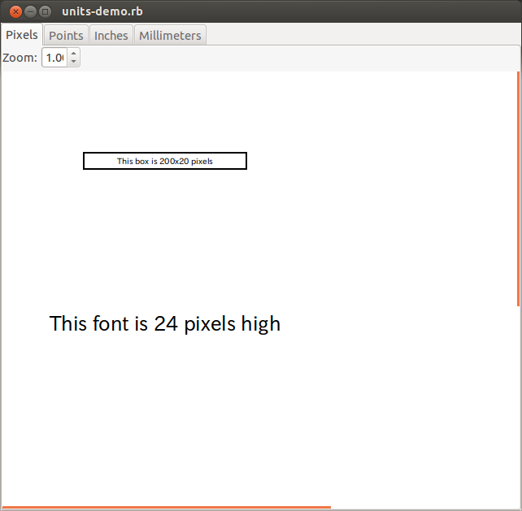
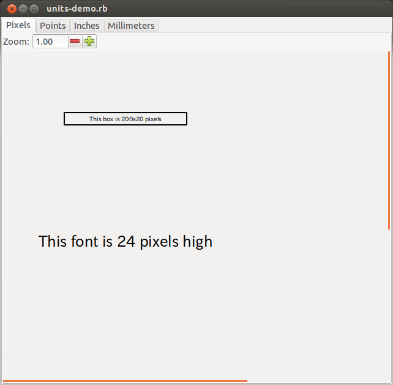
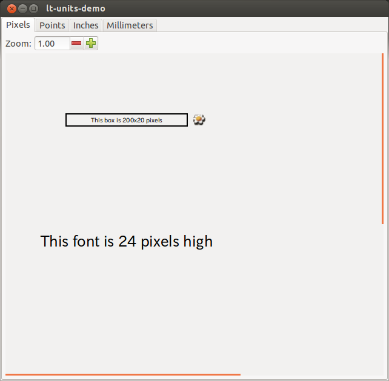

2013-03-28
Ruby/GooCanvasのサンプル比較 - units-demo
最近、Ruby-GNOME2プロジェクトのサンプルで遊ばせてもらっています。
（サンプルをGObject Introspectionベースのバインディングに移植するなど。）
https://github.com/ruby-gnome2/ruby-gnome2/blob/master/goocanvas/sample/units-demo.rb
旧サンプル

GObject Introspection 版
- スピンボタンのデザインがGitっぽくなってます。
- 背景色が明るすぎず、目にやさしい感じでよさげです。

C オリジナル
- GI版と比べて、見た目はほとんど変わりません。
- 両方とも動かしてみましたが、よさげです。
- お花が咲いています。
- GI版にお花が咲いていないのは、
私がなまけたコミットの意図を明確にするとともに、pull requestを小さくするするためです。 - 時間ができたら、勉強して咲かせる予定です。
- ただ、オリジナルの実装はなんというか。。。むずかしい。
- どなたか咲かせてくださるとありがたいです。
- GI版にお花が咲いていないのは、
https://git.gnome.org/browse/goocanvas/tree/demo/units-demo.c
